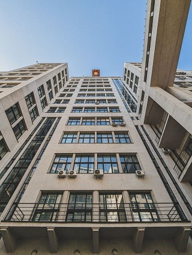
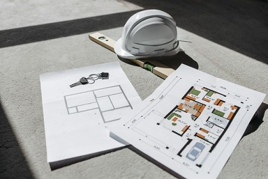
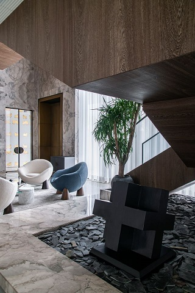
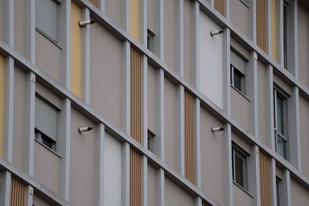
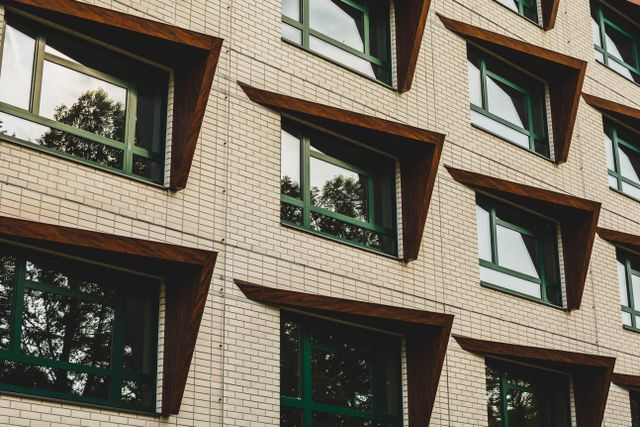
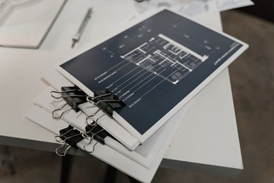
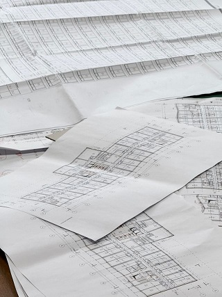
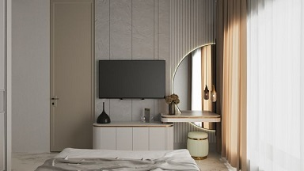

Complete Architectural Design and Modelling Solutions
Complete Architectural Planning, Concept Generation, 3D Modelling, and Detailing Solutions for All Types of Residential, Commercial, Industrial, and Mixed-Use Building Projects.
Why to hire a full time architect or BIM modeler if you need design services occasionally....
Just try our fast, cheap and accurate design services....
Services Provided

# Concept Generation and Schematic Design for Residential Villas, Apartments, Commercial Complex Buildings, Office Spaces, Warehouses, and Industrial Facilities

# Complete Architectural Layout Generation including Detailed Floor Plans, Site Plans, Roof Plans, Cross-Sections, and Exterior Elevations
# High-Fidelity 3D BIM Modelling using Revit for Precise Spatial Coordination, Collision Detection, and Parametric Component Design

# Interior Space Planning and Detailing including Furniture Layouts, Reflected Ceiling Plans (RCP), Flooring Patterns, and Custom Millwork Drawings

# Facade Design and Detailing covering Curtain Walls, Storefronts, Cladding Systems, and Modern Architectural Building Envelopes

# Creation of Realistic Rendered Photos and Walkthroughs of Interior and Exterior Spaces for Client Presentations and Marketing Catalogues

# Creation of Accurate Construction Documentation (CD Sets) and Working Drawings for On-Site Execution and Contractor Bidding

# Landscape and Site Layout Design including Hardscape Detailing, Drainage Routing, Walkways, Parking Layouts, and Entry Gates

# Millwork and Joinery Detailing for Custom Cabinetry, Wardrobes, Main Doors, Windows, and Architectural Features
# As-Built Modelling and 2D Drafting from Point Cloud Data, Laser Scans, or On-Site Hand Measurements
# 2D to 3D Architectural Conversion, Redrafting, and Legacy Blueprints Digitization into Intelligent Revit Models
# PDF/Hand Rough Sketch to AutoCAD Architectural Drawing Conversion.